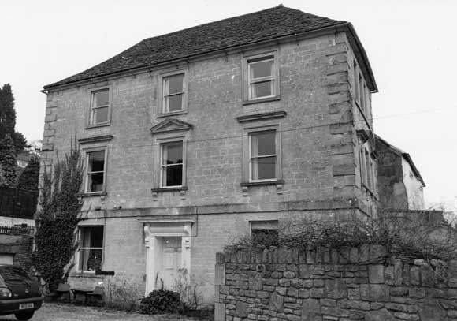

Type of building:
Attached village house
Listing:
Grade ll
Plan and elevation:
Now (with eastern extensions) double pile and three storied with cellar. Original
building single pile and two / three unit with probable separate single unit
service building.
Summary of the probable main building
history:
Late 17th Century with substantial remodelling in the mid 18th Century. Modifications
in the late 19th Century and again in the late 20th Century.

West elevation
Exterior:
West elevation: Coursed squared rubble stone with dressed raised quoins. Inserted
plate glass sash windows with horns. Three windows at the first floor level
have moulded architraves with sills supported on brackets and moulded hoods
above, the central window with a pediment above. Second floor has three windows
with architraves. Ground floor windows have plain dressed stone surrounds. There
is a plat band between the ground floor and the first floor. Central six-panelled
door (now sealed) under a flat moulded hood supported on consoles. Moulded door
frame with a pulvinated frieze. Modern entry, flanked with columns, to the left.
Stone slated hipped roof.
Return elevation to the south also in classical style - each floor with a triple window arrangement, the one on the first floor being a Venetian window with the moulded sills supported on brackets, the second floor group with beaded dressed stone surround, the ground floor group set in a plain dressed stone surround. The north return elevation of an earlier style. The first and second floor levels have a three- light mullion window each of ogee section under return drip labels. The ground floor window has been altered but looks to have been a two-light mullion window of ogee section.
Attached to the rear of the property and at right angles to it are two two-storied extensions under a pitched tiled roof but with separate ashlar stacks and coped raised verges. The most western extension is of ashlar, the most eastern is of rubble stone at ground floor level but ashlar at first floor level. The first floor of the eastern part of the structure is jettied over the ground floor with the gable wall being measured at about 58cms thick. Both extensions in more recent times have been added to.
Interior:
In the main house the fixtures are generally consistent with the mid-late 18th
Century eg six-panelled doors (with iron and nail secured `L` hinges on the
upper floors), window shutters, moulded dado rails, staircase with moulded handrail
and plain balusters, arched fireplace alcoves, a large arched and chamfered
fireplace in the dining room and a small stone ogee moulded and beaded stone
fireplace in a first floor room. Also some later features - a fine mid
to late 19th Century elaborately moulded fireplace in the sitting room fitted
with an iron arched grate. But there are structural indications of an earlier
period - splayed window openings on the west elevation with ogee moulded
mullions (one on the first floor fitted with window boxes to house the weights
of inserted small sash windows). In the cellar there is a blocked three-light
mullion window of ovolo section on the south wall (no longer visible externally).
The loft-attic area has been converted for domestic usage but some of the roof timbers have been left uncovered - a collar roof, purlins cut back at the jointure with the principals, diagonally set ridge with yoke, all consistent with mid 18th Century construction.
At first floor level there are steps up to the first northern extension and a further step up to the second extension.
Date & development:
On the available evidence, the house was originally constructed in the late
17th Century as a single pile and three unit dwelling running north-south with
a separate single storey and single unit service area to the east. In the mid
18th Century the house was remodelled to give it a fashionable classical appearance,
the building was extended eastwards to link with the previous service area.
This extension appears to have been of single storey construction (butt-jointed
to the main structure). Subsequently, the first storey was added to both structures
(bonded to the main building and the use of some ashlar). To preserve the alignment
of the south walls of the extensions, the first floor over the previous service
area was given a jettied appearance. Further additions were made to the north
walls of the extensions in the late 19th Century and the late 20th Century.
Ownership/occupation:
At the date of the Batheaston Tithe Map and Apportionment Schedule the property
was owned and occupied by Sarah Cowdry
References:
- 1840 Tithe Map and Apportionment Schedule for Batheaston - Somerset Record
Office
Reference Pictures
| South
elevation |
North
elevation |
Late
17th century 3-light window with ovolo mouldings in the basement |
Survey Drawings
| Ground
Plan |
Cellar
Plan |
Section |